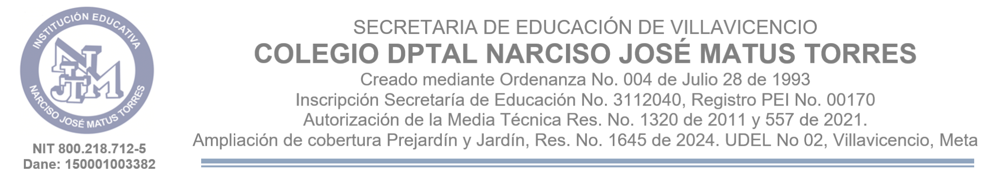

Generación de documentos e informes en PDF.
Diligencie los apartados pertinentes. Los campos vacíos no aparecerán en el PDF. Describa los hechos con precisión y diferencie lo constatado directamente de la información recibida.
Registre información académica verificable, las estrategias pedagógicas realmente implementadas y la evolución observada. Los campos vacíos no aparecerán en el PDF.
Registre observaciones pedagógicas verificables. No incluya diagnósticos clínicos ni afirmaciones que no estén sustentadas.
Describa hechos y manifestaciones de forma objetiva. No formule diagnósticos clínicos ni incluya información sensible innecesaria. Si existe riesgo inmediato, active la ruta institucional correspondiente sin esperar este informe.
Registre hechos verificables, diferencie observaciones directas de información recibida y describa únicamente las actuaciones que efectivamente se realizaron. La remisión no constituye por sí misma una decisión disciplinaria.
Registre hechos concretos y diferencie observaciones directas de información recibida. Esta plantilla documenta la novedad y no determina por sí sola una clasificación ni responsabilidad. Si hay riesgo inmediato, active sin demora la ruta institucional correspondiente.
Exponga la situación de forma objetiva y señale la actuación concreta que solicita a Rectoría. No anticipe decisiones que corresponden a esa instancia ni presente información no verificada como hecho probado.
Diligencie la información que corresponda a la actividad realizada. Los campos vacíos no aparecerán en el PDF. Use el asunto como nombre de la actividad y describa únicamente hechos y resultados que pueda sustentar.
El generador no certifica la veracidad de los datos: quien elabora debe revisar el contenido antes de generar el PDF.
Complete los campos del oficio. Al generarlo podrá guardarlo por separado o conservarlo en memoria para incorporarlo una sola vez al PDF completo.
Puede adjuntar varias imágenes JPG, JPEG o PNG. En el PDF cada fotografía aparecerá a la izquierda y su descripción a la derecha, conservando la proporción original. Cada pareja de imagen y descripción se mantendrá junta al cambiar de página.
Adjunte documentos PDF de soporte. Sus páginas se incorporarán al final del informe, después de las evidencias fotográficas, conservando el contenido de cada archivo.
En navegadores compatibles podrás elegir la carpeta de destino. En los demás se usará la descarga o el menú para compartir.
Si necesita oficio remisorio, seleccione «Incluirlo en el PDF completo» para mantenerlo temporalmente en memoria. Después pulse «Generar PDF completo»; el oficio aparecerá una sola vez al inicio, seguido del informe, las fotografías y los anexos PDF.